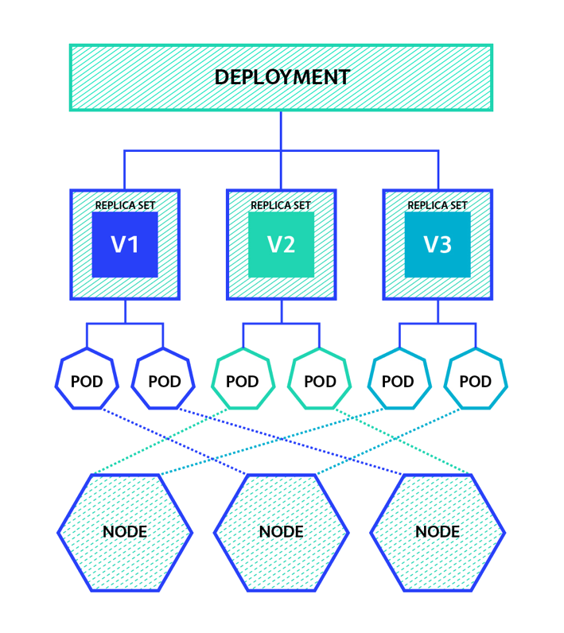
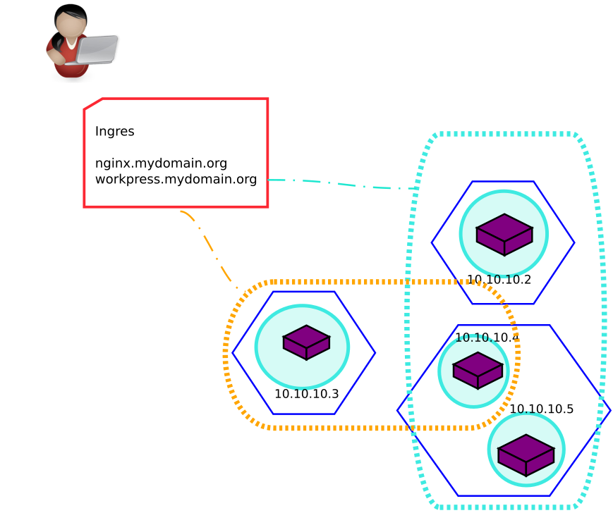

class: center, middle, invert .image-25[] ### Kubernetes ### Jorge Pastor --- class: marca ### Que es? Kubernetes es una plataforma portátil, extensible y de código abierto para gestionar cargas de trabajo y servicios en contenedores ### Historia Kubernetes es el predecessor del proyecto Borg de Google. El nombre Kubernetes se origina del griego, que significa timonel o piloto. Google abrió el proyecto Kubernetes en 2014 --- class: marca ### Etructura del cluster  --- class: marca ### Pod El objeto mas pequeño de nuestro cluster  --- class: marca, center  .left[**Deployment** despliega la aplicación y crea un control de versiones] --- class: marca ### Servicios Se encargan de dar acceso a una aplicación  --- class: marca ### ClusterIP Servicio de comunicación, entre aplicaciones dentro del cluster .center[] --- class: marca ### NodePort Servicio de acceso desde el exterior a las aplicaciones del cluster. Puertos permitidos ( 30000 - 32767 )  --- class: marca ### ExternalIP Serivicio que expone una aplicación a una ip concreta  --- layout: true class: marca ### Ingres --- Es un proxy que proporciona kubernetes junto con nginx para filtrar las entradas al cluster. Este objeto es accesible desde el nodo master, o se puede comunicar con un *Loadbalancer* de AWS o Gogle Cloud. --- class: marca  --- layout: false layout: true class: marca ### Volumenes --- class: marca Existen tres tipos de volumenes: **Temporales:** - EmptyDir - HostPath **Persistentes:** - Volumen externo de red Para Utilizar volumenes persistentes recomiendan la metodología `PV/PVC` ---  --- Metodologia `PV/PVC` - `PV` Marca un disco/volumen como disponible - `PVC` Es la petición de espacio que se requiere Por Que? - Esta forma de trabajo es para separar las tareas del SysAdmin y Desarrollador --- Funcionamiento de trabajo con PV/PVC  --- layout: false class: marca ### Piensa en grande Kubernetes puede soportar hasta: - 5.000 nodos - 150.000 pods totales - 300.000 containers - 100 pods por nodo .pull-left[Una infraestructura así para un solo administrador, plantea un problema] .right[] --- class: marca ### Namespaces Diferentes equipos trabajando simultaniamente sin molestarse  --- class: marca ### Permisos y usuarios - Usuarios y grupos - Diferentes roles de acceso a los objetos del cluster .center[] --- class: center, middle, invert .image-25[]